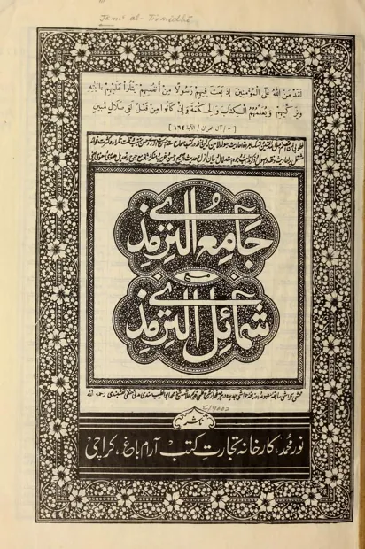

جامع الترمذي
Jami' at-Tirmidzi
Baca Jami' at-Tirmidzi (جامع الترمذي) karya Imam at-Tirmidhi secara gratis di Maktabah Ilmu: teks Arab, Indonesia, Inggris. Tanpa daftar, tanpa iklan.
Buka kitab iniLihat lemari ilmuDaftar isi
- The Book on Purification
- The Book on Salat (Prayer)
- The Book on Al-Witr
- The Book on the Day of Friday
- The Book on the Two Eids
- The Book on Traveling
- The Book on Zakat
- The Book on Fasting
- The Book on Hajj
- The Book on Jana''iz (Funerals)
- The Book on Marriage
- The Book on Suckling
- The Book on Divorce and Li'an
- The Book on Business
- The Chapters On Judgements From The Messenger of Allah
- The Book on Blood Money
- The Book on Legal Punishments (Al-Hudud)
- The Book on Hunting
- The Book on Sacrifices
- The Book on Vows and Oaths
- The Book on Military Expeditions
- The Book on Virtues of Jihad
- The Book on Jihad
- The Book on Clothing
- The Book on Food
- The Book on Drinks
- Chapters on Righteousness And Maintaining Good Relations With Relatives
- Chapters on Medicine
- Chapters On Inheritance
- Chapters On Wasaya (Wills and Testament)
- Chapters On Wala' And Gifts
- Chapters On Al-Qadar
- Chapters On Witnesses
- Chapters On Zuhd
- Chapters on the description of the Day of Judgement, Ar-Riqaq, and Al-Wara'
- Chapters on the description of Paradise
- The Book on the Description of Hellfire
- Chapters on Manners
- Chapters on Parables
- Chapters on The Virtues of the Qur'an
- Chapters on Recitation
- Chapters on Tafsir
- Chapters on Virtues